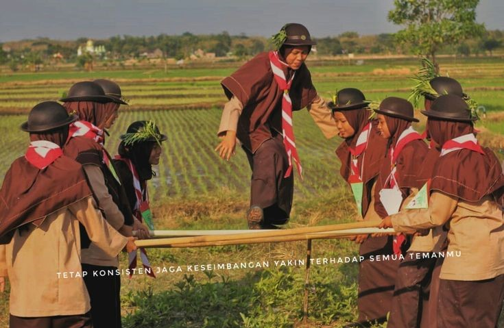
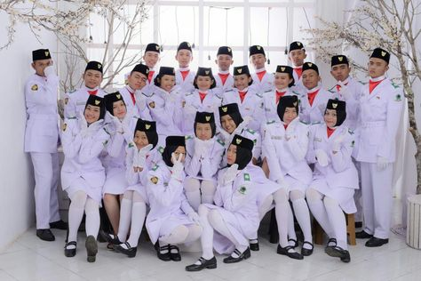
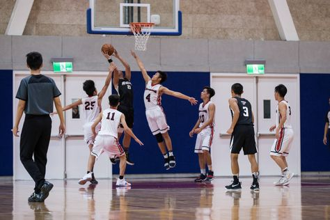
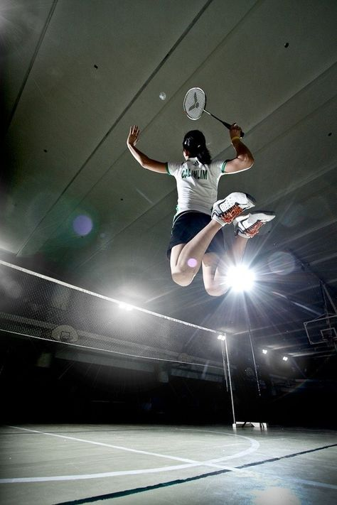

Pramuka adalah singkatan dari Praja Muda Karana yang memiliki arti “Rakyat muda yang suka berkarya”
Paskibra merupakan singkatan dari Pasukan Pengibar Bendera.
Kegiatan ekstrakurikuler basket memiliki manfaat yang sangat penting dalam Pendidikan Jasmani.
Badminton adalah olahraga yang melibatkan gerakan tubuh dan aktivitas fisik. Melalui ekstrakurikuler badminton, siswa dapat mengembangkan keterampilan fisik seperti kelincahan, kecepatan, kekuatan, dan ketahanan. Latihan reguler dalam ekstrakurikuler badminton dapat membantu siswa meningkatkan kebugaran fisik mereka.
